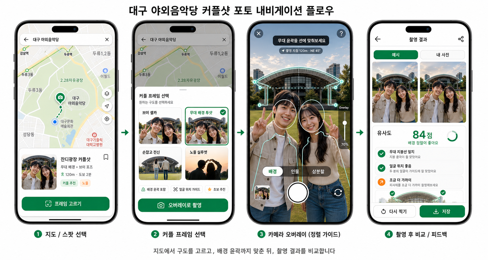

1
지도에서 스팟 선택
네이버 지도 위에 표시된 포토 스팟 마커를 선택합니다.
지도에서 포토스팟과 프레임을 고르면,
예시 사진과 배경 윤곽 오버레이를 따라 원하는 구도의 사진을 쉽게 찍을 수 있도록 안내합니다.

이 MVP가 보여줘야 하는 장면은 하나입니다. 사용자가 지도에서 포토스팟을 고르고, 커플 프레임을 선택한 뒤, 무대 배경 윤곽과 인물 위치를 맞춰 촬영하고, 결과를 예시 사진과 비교하는 흐름입니다.
네이버 지도 위에 표시된 포토 스팟 마커를 선택합니다.
같은 장소 안에서 브이 셀카, 무대 배경 투샷, 손잡고 전신, 노을 실루엣등을 고릅니다.
인물 위치와 뒤 배경 스팟의 특징 윤곽을 함께 맞춘 뒤 촬영합니다.
예시 사진과 내 사진을 비교하고 간단한 피드백을 제공합니다.
네이버 지도 표시, 현재 위치, 포토스팟 마커, 하단 카드, 거리순 정렬.
장소별 촬영 프레임, 예시 이미지, 포즈, 촬영 방향, 추천 시간대.
카메라 프리뷰 위에 배경 윤곽, 인물 가이드, 수평선, 투명도 조절.
예시 vs 내 사진, 유사도 점수, 피드백 칩, 다시 찍기, 저장.
초기에는 seed 데이터로 충분하고, 이후 관리자 권한으로 확장.
촬영 팁 생성, 결과 피드백 문구, 간단한 이미지 유사도 평가.
해시태그는 단순한 장식이 아니라, 포토스팟을 탐색하고 프레임을 필터링하는 데이터 구조로 사용합니다. 사용자는 긴 설명보다 태그 조합으로 원하는 사진을 빠르게 고를 수 있습니다.
지역, 랜드마크, 접근성 기준으로 탐색합니다.
사용자가 원하는 사진의 분위기와 인물 구도를 고릅니다.
MVP에서는 추천순, 쉬운순, 비교용 프레임에 바로 연결합니다.
shot_frames.tags를 text[] 또는 별도 tags,
shot_frame_tags 테이블로 분리합니다. 4주 MVP는 text[]로 시작하고,
필터와 추천이 복잡해지면 정규화하는 방식이 현실적입니다.
데이터는 장소 → 촬영 지점 → 촬영 프레임 → 오버레이 자산 → 촬영 결과로 이어지는 구조가 적합합니다.
| 테이블 | 역할 | 주요 필드 | MVP 판단 |
|---|---|---|---|
places |
큰 장소 단위 | name, region, address, lat, lng, thumbnail_url |
필수 |
photo_spots |
사용자가 서거나 촬영하는 지점 | place_id, name, lat, lng, bearing, recommended_time |
필수 |
shot_frames |
프레임/구도 선택 단위 | photo_spot_id, title, tags, sample_image_url, overlay_image_url, guide_text |
필수 |
overlay_assets |
배경/인물/삼분할 등 오버레이 레이어 | shot_frame_id, asset_type, asset_url, opacity, z_index |
선택. 토글형 Overlay면 추천 |
captures |
사용자가 촬영한 결과 | shot_frame_id, image_url, similarity_score, feedback_json |
결과 비교를 넣으면 필요 |
create table places (
id uuid primary key default gen_random_uuid(),
name text not null,
region text,
address text,
lat double precision not null,
lng double precision not null,
description text,
thumbnail_url text,
created_at timestamptz default now()
);
create table photo_spots (
id uuid primary key default gen_random_uuid(),
place_id uuid references places(id) on delete cascade,
name text not null,
description text,
lat double precision not null,
lng double precision not null,
bearing integer,
distance_hint text,
difficulty text,
recommended_time text,
thumbnail_url text,
popularity_score integer default 0,
created_at timestamptz default now()
);
create table shot_frames (
id uuid primary key default gen_random_uuid(),
photo_spot_id uuid references photo_spots(id) on delete cascade,
title text not null,
description text,
frame_type text,
tags text[] default '{}',
sample_image_url text,
overlay_image_url text,
guide_text text,
pose_guide text,
composition_guide text,
difficulty text,
sort_order integer default 0,
created_at timestamptz default now()
);
create table captures (
id uuid primary key default gen_random_uuid(),
session_id text,
shot_frame_id uuid references shot_frames(id) on delete set null,
image_url text,
similarity_score integer,
feedback_json jsonb,
created_at timestamptz default now()
);대구 야외음악당, 두류공원, 2.28 자유광장, 대구문화예술회관, 이월드, 앞산 전망대, 김광석 다시그리기길, 수성못, 계산성당 중 일부
네이버 1784 정문, 정자동 카페거리, 탄천 산책로, 분당 중앙공원, 정자역 일대 등
발표 시연에 맞춰 places 4~7개, photo_spots 10~12개,
shot_frames 15~20개 준비 예정입니다.
직접 대구와 네이버 1784 주변의 대표 사진 스팟을 등록합니다.
예시 사진 1장, 배경 윤곽 PNG/SVG, 인물 위치 가이드, 촬영 방향과 거리 힌트를 한 세트로 관리합니다.
사용자가 촬영 결과를 업로드하면 관리자 검수 후 새 예시 프레임으로 등록하는 구조로 확장할 수 있습니다.
스팟 선택부터 첫 사진 촬영까지 걸리는 시간.
오버레이가 다시 찍고 싶게 만드는지 확인.
어디에 서고 무엇을 맞춰야 하는지 이해했는지.
지도와 오버레이만으로 원하는 사진에 가까워지는가.
| 주차 | 목표 | 산출물 |
|---|---|---|
| 1주차 | 문제 정의, 데이터 설계, 네이버 지도 연결 | 지도 화면, DB schema, seed 데이터 초안 |
| 2주차 | 포토스팟 상세과 프레임 선택 구현 | 마커 선택, 하단 카드, 프레임 목록 |
| 3주차 | 카메라 Overlay와 촬영 구현 | 카메라 프리뷰, 오버레이 토글, 캡처 |
| 4주차 | 결과 비교, 피드백, 발표 시나리오 정리 | 비교 화면, 점수/피드백, 데모 플로우 |
네이버 지도, 포토스팟 마커, 프레임 선택, 카메라 Overlay, 결과 비교.
Supabase Storage 저장, 유사도 점수, LLM 촬영 팁, 관리자 등록.
실시간 AI 코칭, AR 공간 인식, 자동 포토스팟 수집, SNS 연동, 로그인.